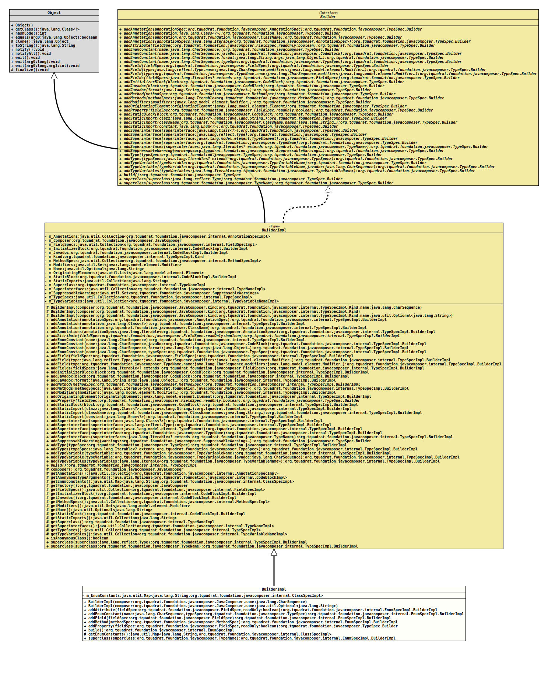

Class EnumSpecImpl.BuilderImpl
- All Implemented Interfaces:
TypeSpec.Builder
- Enclosing class:
EnumSpecImpl
TypeSpec.Builder
for enum types.- Author:
- Square,Inc.
- Modified by:
- Thomas Thrien (thomas.thrien@tquadrat.org)
- Version:
- $Id: EnumSpecImpl.java 1063 2023-09-26 15:14:16Z tquadrat $
- Since:
- 0.2.0
- UML Diagram
-

UML Diagram for "org.tquadrat.foundation.javacomposer.internal.EnumSpecImpl.BuilderImpl"
{kind=link}
-
Field Summary
Fields -
Constructor Summary
ConstructorsConstructorDescriptionBuilderImpl(JavaComposer composer, CharSequence name) Creates a newBuilderImplinstance.BuilderImpl(JavaComposer composer, Optional<String> name) Creates a newBuilderImplinstance. -
Method Summary
Modifier and TypeMethodDescriptionfinal EnumSpecImpl.BuilderImpladdAttribute(FieldSpec fieldSpec, boolean readOnly) Adds an attribute to this type.final EnumSpecImpl.BuilderImpladdEnumConstant(CharSequence name, TypeSpec typeSpec) Adds anenumconstant for the type to build.final EnumSpecImpl.BuilderImplAdds a field to this type.final EnumSpecImpl.BuilderImpladdMethod(MethodSpec methodSpec) Adds a method for the type.final TypeSpec.BuilderaddProperty(FieldSpec fieldSpec, boolean readOnly) Adds a JavaBean property to this type.final EnumSpecImplbuild()Builds a newTypeSpecinstance from the added components.protected final Map<String, ClassSpecImpl> Returns theenumconstants of the new type.final EnumSpecImpl.BuilderImplsuperclass(TypeName superclass) Sets the superclass for the type.Methods inherited from class org.tquadrat.foundation.javacomposer.internal.TypeSpecImpl.BuilderImpl
addAnnotation, addAnnotation, addAnnotation, addAnnotations, addEnumConstant, addEnumConstant, addEnumConstant, addField, addField, addFields, addInitializerBlock, addJavadoc, addJavadoc, addMethods, addModifiers, addOriginatingElement, addStaticBlock, addStaticImport, addStaticImport, addStaticImport, addSuperinterface, addSuperinterface, addSuperinterface, addSuperinterface, addSuperinterfaces, addSuppressableWarning, addType, addTypes, addTypeVariable, addTypeVariable, addTypeVariables, composer, getAnnotations, getAnonymousTypeArguments, getFactory, getFieldSpecs, getInitializerBlock, getJavadoc, getMethodSpecs, getModifiers, getName, getStaticBlock, getStaticImports, getSuperclass, getSuperinterfaces, getTypeSpecs, getTypeVariables, isAnonymousClass, superclass
-
Field Details
-
m_EnumConstants
The enum constants.
-
-
Constructor Details
-
BuilderImpl
Creates a newBuilderImplinstance.- Parameters:
composer- The reference to the factory that created this builder instance.name- The name of the type to build.
-
BuilderImpl
Creates a newBuilderImplinstance.- Parameters:
composer- The reference to the factory that created this builder instance.name- The name of the type to build.
-
-
Method Details
-
addAttribute
@API(status=STABLE, since="0.2.0") public final EnumSpecImpl.BuilderImpl addAttribute(FieldSpec fieldSpec, boolean readOnly) Adds an attribute to this type.
An attribute is basically a field with the related accessor and mutator methods.
If the name for a non-final property will be
text, and its type isjava.lang.String, the generated code will look basically like this:… private String m_Text; … public final String text() { return m_Text; } … public final void text( final String value ) { m_Text = text; } …If accessor or mutator needs to be more complex, the respective methods must be created manually.
- Specified by:
addAttributein interfaceTypeSpec.Builder- Specified by:
addAttributein classTypeSpecImpl.BuilderImpl- Parameters:
fieldSpec- The field definition.readOnly-trueif no mutator should be created even for a non-final field,falseif a mutator has to be created for a non-final field. Will ignored if the field is final.- Returns:
- This
Builderinstance.
-
addEnumConstant
Adds anenumconstant for the type to build.- Specified by:
addEnumConstantin interfaceTypeSpec.Builder- Overrides:
addEnumConstantin classTypeSpecImpl.BuilderImpl- Parameters:
name- The name for theenumconstant.typeSpec- The type of theenumconstant.- Returns:
- This
Builderinstance.
-
addField
Adds a field to this type.- Specified by:
addFieldin interfaceTypeSpec.Builder- Overrides:
addFieldin classTypeSpecImpl.BuilderImpl- Parameters:
fieldSpec- The field definition.- Returns:
- This
Builderinstance.
-
addMethod
Adds a method for the type.- Specified by:
addMethodin interfaceTypeSpec.Builder- Specified by:
addMethodin classTypeSpecImpl.BuilderImpl- Parameters:
methodSpec- The method.- Returns:
- This
Builderinstance.
-
addProperty
Adds a JavaBean property to this type.
A property is basically a field with the related getter and setter methods.
If the name for a non-final property will be
text, and its type isjava.lang.String, the generated code will look basically like this:… private String m_Text; … public final String getText() { return m_Text; } … public final void setText( final String value ) { m_Text = text; } …If getter or setter needs to be more complex, the respective methods must be created manually.
- Specified by:
addPropertyin interfaceTypeSpec.Builder- Specified by:
addPropertyin classTypeSpecImpl.BuilderImpl- Parameters:
fieldSpec- The field definition.readOnly-trueif no setter should be created even for a non-final field,falseif a setter has to be created for a non-final field. Will ignored if the field is final.- Returns:
- This
Builderinstance.
-
build
Builds a newTypeSpecinstance from the added components.- Specified by:
buildin interfaceTypeSpec.Builder- Specified by:
buildin classTypeSpecImpl.BuilderImpl- Returns:
- The new
TypeSpecinstance.
-
getEnumConstants
Returns theenumconstants of the new type.- Overrides:
getEnumConstantsin classTypeSpecImpl.BuilderImpl- Returns:
- The
enumconstants.
-
superclass
Sets the superclass for the type. This class is extended by the new type.
- Specified by:
superclassin interfaceTypeSpec.Builder- Overrides:
superclassin classTypeSpecImpl.BuilderImpl- Parameters:
superclass- The superclass.- Returns:
- This
Builderinstance.
-